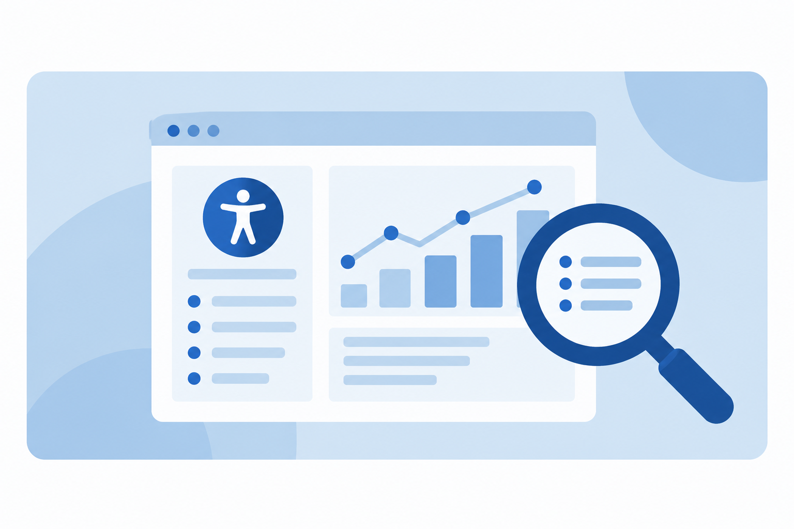

Leading Accessibility at Scale: Strategy, Governance, and Delivery
Managing a $2.7M STEM accessibility budget, roadmaps, risks, vendors, and cross-functional workstreams.
View Case StudyCase Studies
These case studies show how I lead accessibility from strategy through execution, aligning teams and vendors, solving systemic barriers, improving products, and building processes that make accessibility more sustainable over time.
Managing a $2.7M STEM accessibility budget, roadmaps, risks, vendors, and cross-functional workstreams.
View Case Study
Turning recurring accessibility issues into cross-project standards, reusable guidance, and more consistent delivery across teams.
View Case Study
Leading a one-year initiative across 200+ higher education learning supplements and building a repeatable remediation model for future projects.
View Case Study
Using rapid prototyping, accessibility review, and stakeholder feedback to move from vision to approved design.
View Case Study
How I assessed user impact, severity, and systemic risk in a shared date-picker component.
View Case Study
How an early Figma review prevented a predictable screen reader usability problem before development.
View Case Study